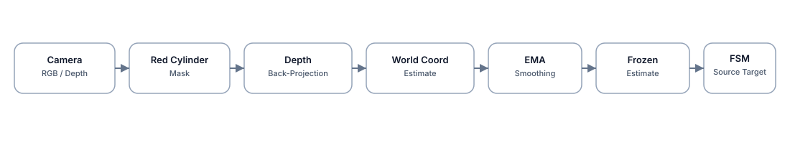

Visual Oracle — architectural design
policies/fsm_visual_oracle.py, vision/observer.py,
vision/geometry.py) are not part of this submission and are future work.
This page documents the design so the extension path is clear.
The baseline started with a ground-truth lookup to validate motion control. The Visual Oracle design replaces that lookup by estimating the cylinder pose from RGB segmentation and depth back-projection, then smoothing the estimate with an EMA.
The estimator is designed to be lightweight and deterministic — not a learned detector. The pose would be frozen during descent and close-grip phases to avoid self-occlusion jitter and preserve a consistent grasp target.

Why the freeze strategy matters
As the arm descends toward the cylinder, the wrist-mounted camera begins to occlude the object or move rapidly. Updating the EMA target during that window would shift the reacher goal mid-descent, causing instability. The design freezes the estimate once the FSM transitions into DESCEND_SOURCE, so the reacher tracks a fixed world-frame point through grasp closure.
This tradeoff accepts a static pose during the last few centimeters in exchange for deterministic, jitter-free behavior in the close-grip window.